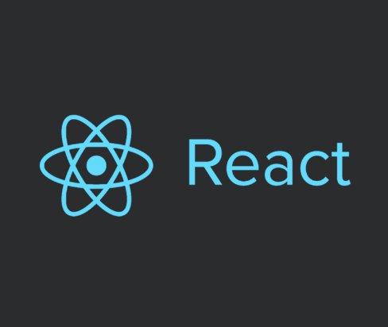

Voltar à Página Inicial
Conceito
O React é uma poderosa biblioteca para construção de interfaces visuais em JavaScript. Ou seja, é uma ferramenta ideal para o desenvolvimento front-end. No React, você pode adotar estruturas do HTML e do JavaScript em um só código, a fim de manipular os aspectos da apresentação de um site.
Forma de Utilização
A base do React é o famoso JavaScript. Por essa razão, estudar React é ter contato com uma das linguagens mais versáteis e requisitadas do momento. O domínio dessa tecnologia certamente representa ótimas oportunidades no mercado.
Vantagens
-
Flexível, é livre para definir padrão, é uma estrutura pouco escalável e de difícil manutenção.
-
Componentes, permite muito reaproveitamento de código e facilita muito na manutenção e evolução do código.
-
JSX, uma das características mais fantásticas do react, que é poder escrever HTML e css dentro de um arquivo javascript, e além disso todos os recursos da linguagem como loops, funções de formatação, validações e muito mais.
Desvantagens
-
Documentação oficial reduzida
-
JSX, apesar de ser incrível usar HTML com javascript pode ser um pesadelo para quem está começando agora, ou até mesmo para quem prefere trabalhar com HTML, CSS e JavaScript separado.
-
É livre para definir padrão, o que pode gerar projetos pouco escaláveis, caso não seja estudado e se procure uma boa estrutura do projeto.